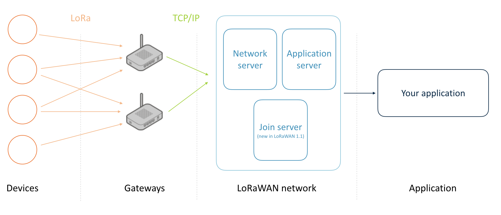

Building a private LoRa network
There is a lot of interest in LoRa, a wide-area network solution that promises kilometers of range with low power consumption, a perfect fit for the Internet of Things. Telecom operators are rolling out LoRa networks, but because LoRa operates in the open spectrum, you can also set up your own network. This article discusses what you need to build a private LoRa network and how to use the network to send data from an Arm Mbed end node to the cloud.
Note on LoRa vs. LoRaWAN: Technically, this article explains how to build a LoRaWAN network. LoRa is the modulation technique used (PHY), and LoRaWAN is the network protocol on top of the physical layer (MAC).
What you need
A typical LoRa network consists of four parts: devices, gateways, a network service and an application:
Topology of a LoRa network
For hardware, you need devices and gateways, similar to how you would set up a Wi-Fi network. Gateways are simple: they scan the spectrum and capture LoRa packets. There is no gateway pinning here. Devices are not associated with a single gateway; thus, all gateways within range of a device receive the signal. The gateways then forward their data to a network service that handles the packet.
The network service deduplicates packets when multiple gateways receive the same packet, decrypts the message (everything is end-to-end encrypted) and handles LoRa features, such as adaptive data rating. It then forwards the decrypted data to your application. Often, network service providers allow you to run parts of the network - such as the application server, which decrypts the messages - yourself.
There are five requirements.
You need hardware:
- Gateways.
- Devices.
And you need software:
- Device firmware.
- A network service.
- An app.
This guide shows you:
- Which hardware you can buy.
- How to configure a gateway.
- How to write device firmware.
- How to set up a web application to show your LoRa traffic.
Note: The frequency that LoRa uses differs among regions. Make sure your gateways and devices are legal in your jurisdiction. For example, use 915 MHz radios in the United States and 868 MHz radios in Europe. You can find more information in the LoRaWAN regional parameters specification.
Choosing a gateway
You have many choices in the gateways you can use, but we've had good experience with these three:
- Kerlink Wirnet station. Expensive (around 1,200 euros) but great build quality and range.
- MultiTech conduit. About 1/3 of the price of the Kerlink (about 450 euros) and good for smaller setups. MultiTech also has a rugged outdoor version. Make sure you also order the LoRa mCard.
- Building your own with a Raspberry Pi and an IMST iC880A concentrator. At about 150 euros, this is a cost-efficient option.
Self-built LoRa gateway based on Raspberry Pi 2 and IMST iC880A. Total cost is about 150 euros.
For development purposes, one gateway is enough, but in a production deployment, you need at least two because there will always be dark spots in your network.
Kerlink Wirnet station overlooking the Oslo fjord.
Choosing a device
You also need to build devices. If you use Mbed OS (and you should), you can either use:
- A development board with a LoRa transceiver:
- An Mbed OS Enabled development board together with a LoRa shield:
- SX1272MB2xAS - shield based on the SX1272 transceiver.
- SX1276MB1xAS - shield based on the SX1276 transceiver.
This tutorial applies to all combinations listed above.
Note: When ordering hardware, always make sure you get the variant that works in your region (for example 868 MHz in Europe and 915 MHz in the US).
Network server
For software, you need a server that understands the LoRa protocol and can interpret the data the device sends. It's possible to use your own (Semtech can give you its reference implementation if you sign an NDA), but there are also companies building LoRa network servers as a service, handling everything on your behalf. This article uses The Things Network, an open source, globally distributed network service that also has a free hosted community edition.
Because a network server only processes your data and doesn't store it, you need a somewhere to store your messages, as well. The Things Network allows you to hook into its service through an MQTT client and forward your data to the cloud service of your choice (or straight to your application).
Setting up the gateway
You now need to configure the gateway by installing software to scan the spectrum and forward all LoRa packets to the network server. Below are setup instructions for the three gateways suggested earlier.
Prerequisites
Kerlink Wirnet stations
Follow the instructions in this document.
MultiTech Conduit
The conduit is configured with DHCP disabled, so you need to enable this first. There are two options to do this: either through Ethernet or through micro-USB.
Using Ethernet
- Connect to the conduit over Ethernet (from the conduit to your computer).
- Set a static IP address of 192.168.2.2 for your computer.
- Set a static IP address of 192.168.2.1 as your router.
- Log in through SSH to 192.168.2.1 with the username
rootand passwordroot.
Over micro-USB
- Connect to the conduit using a micro-USB cable.
- The gateway appears as a serial device.
- You can use a program such as GNU Screen or PuTTY to log into the gateway with the username
rootand passwordroot.
Note if logging in fails: If logging in as root fails but you can log in with the username admin and the password admin, you are running the AEP firmware. To proceed, update your gateway firmware to mLinux. Use these instructions.
Now that you are connected, you can set up the gateway:
- Enable DHCP by following Step 4 in this document.
- Connect the gateway over Ethernet to your router.
- Verify that the gateway is connected to the internet (for example, by running
ping 8.8.4.4).
Raspberry Pi
Follow the instructions in this document.
Registering the gateway
- Sign up for an account at The Things Network.
- Visit the Development Console and select the cluster closest to you.
- Click Gateways.
- Click Register gateway.
- Fill in the details of your gateway.
- Click Register gateway.
- You have created the gateway.
If you use the MultiTech conduit, you need the 'Gateway key' to authenticate the gateway to the network. Click on API Keys and Add API Key
Installing the packet forwarder
Kerlink Wirnet station or Raspberry Pi
No further action required. The gateway shows as 'Connected' in the TTN console.
Connected!
MultiTech conduit
-
On the gateway, run:
$ wget https://github.com/kersing/multitech-installer/raw/master/installer.sh $ sh installer.sh -
A wizard starts. Answer the questions.
-
After the gateway reboots, log back in.
-
Then run (again):
$ sh installer.sh -
Fill in the remaining questions.
Wizard (2) for configuring the MultiTech Conduit
-
After this, the gateway shows as Connected in the TTN console.
Connected!
Building a device
This section explains how to build a device that can send sensor data over the LoRa network. For example, you can create a motion sensor using a PIR sensor (less than 10 euros). Of course, you can use any other sensor.
PIR sensor hooked up to a Nordic Semiconductor nRF51-DK with a SX1276 LoRa shield
Some notes on writing firmware
Restrictions on sending data
You cannot send data constantly because of spectrum regulations. Although the spectrum that LoRa uses is unlicensed, it is regulated. For example, in Europe, there are duty cycle limitations of 1% - meaning you can only send 1% of the time. In the US, there's dwell time, which requires you to wait at least 400 ms between transmissions. If you violate these regulations, your data transmission fails. How fast you are allowed to send data depends on the spread factor you use. With a higher spread factor, it takes longer to send a message - though the chance that a gateway receives it increases. However, you need to wait longer before you can send data again. During development, you can set the spread factor to SF7 (the lowest), so you can send every 6-7 seconds.
LoRaWAN has a feature called Adaptive Data Rating (ADR), through which the network can control the spread factor. You probably want this enabled.
Blocked pins
A disadvantage of the SX1272 and SX1276 LoRa shields is that they block a lot of pins. You can solder new headers on the back of the shield to add new peripherals, or use a microcontroller such as the nRF51-DK or a NUCLEO board that has more pins available than just the Arduino headers.
Registering the device on The Things Network
LoRaWAN uses an end-to-end encryption scheme that uses two session keys. The network server holds one key, and the application server holds the other. (In this tutorial, TTN fulfils both roles). These session keys are created when the device joins the network. For the initial authentication with the network, the application needs its device EUI, the EUI of the application it wants to join (referred to as the application EUI) and a preshared key (the application key).
The device EUI and application EUI are globally unique identifiers. You can buy a block of EUIs from the IEEE. Modules often already come with an EUI, which is printed on the device. If you're using a radio shield you can use an EUI from The Things Network's block.
Note: In LoRaWAN 1.1, the join key replaces the application key, and the join server handles the initial authentication. However, at the time of writing, this is not implemented on The Things Network.
Register the device in The Things Network, and generate some keys:
-
Go to The Things Network console.
-
Click Applications.
-
Click Create application.
-
Fill in the details of your application, and click Create application.
-
You're redirected to the application page. Under Devices, click Add end device.
-
Search for your device using the tab From The LoRaWAN Device Repository, if your device is not in the overview, select the option Manually
-
If your device has an EUI printed on it, enter this in Device EUI.
The device EUI is often printed on the module or on the box.
-
Fill in the rest of the details, and click Register end device.
-
The device page opens. It contains the keys that your device uses when authenticating with the network. Click the
<>button to get the keys as a byte array. This makes it easy to copy the keys into code.
Now that the device is registered in The Things Network, you can start writing code!
Importing the demo application
Mbed comes with tools which you can use to build applications. In this tutorial, we are going to use , Arm's zero-installation web IDE.
- Go to studio.keil.arm.com and log into Keil Studio Cloud using your Arm or Mbed account. If you do not have an Arm or Mbed account, sign up from the login page.
- Open a new browser window and go to mbed-os-example-lorawan.
- Copy the URL of the example project.
- In Keil Studio Cloud, select File > Clone. The Clone dialog box displays.
- Paste the URL and click Add project. Keil Studio Cloud clones the project with the version of Mbed OS it was originally created with. The project is set as the active project by default.
Setting keys
In Keil Studio Cloud:
- Open the
mbed_app.jsonfile. This file contains the configuration for the application and holds the authentication keys. - If you have a SX1272 or SX1276 shield (not if you have a module), set your radio type under
lora-radio. - Under
lora.device-eui, enter the device EUI from the TTN console. - Under
lora.application-eui, enter the application EUI from the TTN console. - Under
lora.application-key, enter the application key from the TTN console. - Under
lora.physpecify the channel plan for your region. A list of possible values is listed under 'Selecting a PHY' in the readme.
Sending the value of the PIR sensor
To send the current value of the PIR sensor (whether it sees movement), in Keil Studio Cloud:
-
Open
main.cpp. -
Replace the function
send_message()with:static void send_message() { static InterruptIn pir(D5); // If you hooked the sensor up to a different pin, change it here // create a one-byte payload which contains whether the PIR sensor is *high* or *low* uint8_t buffer[] = { pir.read() }; int16_t retcode = lorawan.send(LORAWAN_APP_PORT, buffer, sizeof(buffer), MSG_CONFIRMED_FLAG); if (retcode == 0) { printf("Sent message over LoRaWAN successfully!\n"); } else { printf("Failed to send message (duty-cycle violation?) (%d)\n", retcode); } }
Verifying the setup
Now you can verify if the setup works by flashing this application to your board.
-
In Keil Studio Cloud, connect your board to your computer. The first time you connect your board, you have to click the Connect to target hardware button to the right of the Target hardware drop-down list. After the first successful connection, Keil Studio Cloud detects the board and suggests a matching target hardware.
-
Click the Run project button to build the project and flash it to the board. You can see the device joining and then sending messages in the The Things Network console, under the Live data tab:
We've got data!
Note 1: You can hook a serial monitor up to the development board (baud rate 115,200) to see debugging messages.
Note 2: No data in the Data tab? Verify that the gateway can receive messages. In the TTN console, go to your gateway, and see if any data comes through under the Traffic tab. If you see your device there but not under the device page, the keys are probably wrong.
Sending manually
By default, the application sends data automatically. If you want to change this, remove this line from main.cpp:
ev_queue.call_every(TX_TIMER, send_message);
Call send_message whenever you want (for example after the state of the sensor changes). Note that you still need to adhere to the duty cycle, so you may not be able to send data immediately.
Relaying data back to the device
You can also send data back to the device. Because LoRaWAN (in Class-A mode, which you're using here) is not continuously connected to the network, you need to wait for a receive (RX) window to occur to receive data. An RX window opens after a transmission. So you need to send to the network before you can receive a message. If you send a message from The Things Network to your device, the network automatically queues the message and delivers it in the next RX window.
You can toggle the LED on your development board over LoRa. In Keil Studio Cloud:
-
Open
main.cpp. -
Replace the
receive_messagefunction with:static void receive_message() { static DigitalOut led(LED1, 0); // the LED under control, default value of 0 int16_t retcode = lorawan.receive(LORAWAN_APP_PORT, rx_buffer, LORAMAC_PHY_MAXPAYLOAD, MSG_CONFIRMED_FLAG|MSG_UNCONFIRMED_FLAG); // ignore errors while retrieving if (retcode < 0) return; led = rx_buffer[0]; // set the value of the LED depending on the first byte in the message printf("Received %d bytes: ", retcode); for (uint8_t i = 0; i < retcode; i++) { printf("%x", rx_buffer[i]); } printf("\n"); }Note: On some development boards, writing
0to the LED turns them on. On others, writing1does this. It depends on the wiring of the board. -
Click the Run project button to build and flash the application.
-
When the device is back online, use the The Things Network console to queue a message. Go to your device page, and under Messaging, select Downlink and add port 21 and data
01. Then press Schedule downlink. Queuing a downlink message over port 21
Queuing a downlink message over port 21 -
After the next transmission, the LED toggles, and a message appears on the serial console. Try the same thing now by sending
0.
Getting your data out of the The Things Network
The system works and sends data in two directions, but the data is not stored anywhere. You can change that. The Things Network offers a data API to get the data out of the network. You can then store it on your own servers or forward it to a cloud service.
For this tutorial, we built a small web application that listens for events from the movement sensors and shows an overview of all sensors. To use this application, you need a recent version of Node.js installed on your computer.
Demo application
To build this application, first grab an access key from The Things Network:
-
Go to your application in the TTN console.
-
Locate your Application ID, and make note of it.
-
Create a new API key via API Keys and Add API key.
Now clone, the demo application, and run it.
-
Download the demo application, and extract it.
-
In the unzipped application, locate
ttn-node-app/server.js, and paste your Application ID and Access Key on lines 1 and 2. -
Open a terminal - or command prompt - and navigate to the folder where you unzipped the application.
-
Run:
$ cd ttn-node-app $ npm install $ node server.jsThis shows:
Connecting to the The Things Network data channel... Connected to The Things Network data channel Retrieving devices... Retrieved devices (2) Web server listening on port 5270! -
Now, open a web browser, and navigate to http://localhost:5270 to see the application running.
Recap
LoRa/LoRaWAN is a technology with which anyone can set up a network and start building long-range IoT devices with a relatively small investment. We hope this guide helped you get started, and we would love to see what you build with LoRa and Mbed.